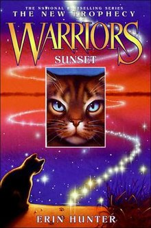
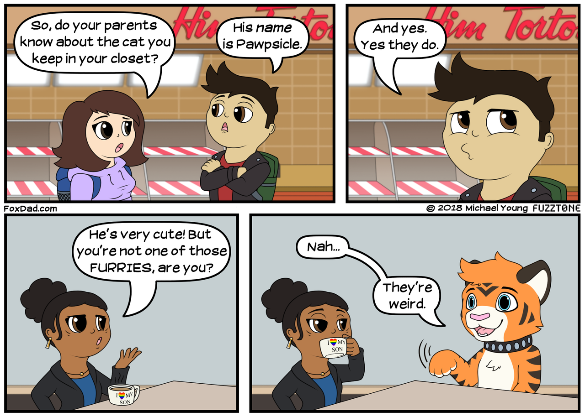

Welcome to Dewside
Log of Eliwood's Thoughts
10:02 pm; january 30, 2021 (saturday)
watching movies that i haven't already seen a thousand times is such a stressful event. it makes me feel so on edge. tv shows aren't like this, so idk why? i pull through but it's uncomfortable for some reason8:19 pm; january 29, 2021 (friday)
bon is finally making a site!! i'm so excited! it's coming along well, even if i'm not the best teacher11:47 pm; january 25, 2021 (monday)
i should make an eeveeverse page10:38 pm; january 22, 2021 (friday)
i just think she's kinda cool :)6:18 pm; january 20, 2021 (wednesday)
[takes a vaguely illegal u-turn]7:40 pm; january 19, 2021 (tuesday)
speaking of warriors-induced nostalgia, i saw this image earlier and it hit me square in the chest. it hurt, dude. it sent me right back to age 12. what the hell i looked at it again after posting this. the effect is still so strong, why this cover in paticular??? why does it do this????? help??????
12:36 pm; january 19, 2021 (tuesday)
videos that instantly make me feel like i'm back in a better time:9:20 pm; january 18, 2021 (monday)
i think i'm starting to unironically like the sonic the hedgehog frachise :/in other news, my friend bon (i'm working on getting her to make a site lol) and i are working on a sort of,, animal crossing AU type of thing. idk if it's gonna go anywhere, but i'm suuuper into it atm. i'll add more on it later!
5:37 pm; january 14, 2021 (thursday)
my dad blocked the koshka fursuits website on our wifi >:( why?? why not the other fursuit maker sites??? it's so frusterating ughin addition, why isn't neocities blocked yet? does he know? my parents haven't said anything about it, so i'd assume not, but if they found it, what would they say? "we like your website" I WISH lol
7:36 pm; january 13, 2021 (wednesday)
coming to you LIVE from my night class!it's a u.s. history course, AND the last class i need to take before i've met all my high school graduation requirements!
while your typical u.s. history fare is usually my least favorite history, since the revolutionary and civil wars are done to DEATH in elementary and junior high schools here, i have faith in this class. the professor is p entertaining!
10:30 pm; january 12, 2021 (tuesday)
Prayer- Hayley Westenra
this song is the only valid religion
10:45 am; january 11, 2021 (monday)
just got off a call with a concurrent enrollment cousellor! sounds like i'll be getting my associate's degree this semester! i'm so happy, one thing is going right for me today.
9:20 am; january 11, 2021 (monday)
when everything else sucks, at least there's still furry dad

8:41 am; january 11, 2021 (monday)
my windows completely fogged up while driving this morning and i almost crashed. i'm sitting in a lecture right now and i started choking on nothing. i cried myself to sleep last night.
yayyy
7:54 pm; january 5, 2021 (tuesday)
i've wiped the page! use the link below to view all those oldies but goodies.
i got yet another job! this time i'm nannying four kids weekdays 1-4:30. we'll see how it goes!
thinking about wolf children again. it's such a good film with a beautiful message about letting go and accepting the paths others want to take. 9.1/10, would reccomend.